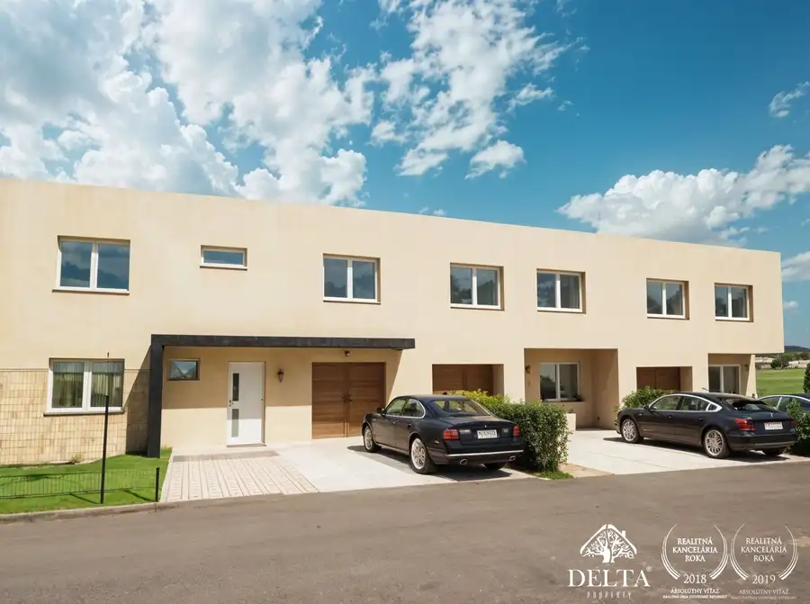
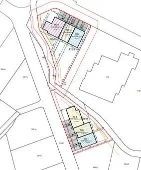
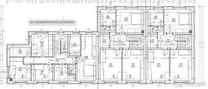
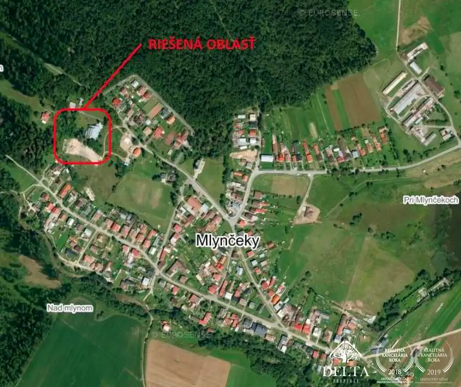
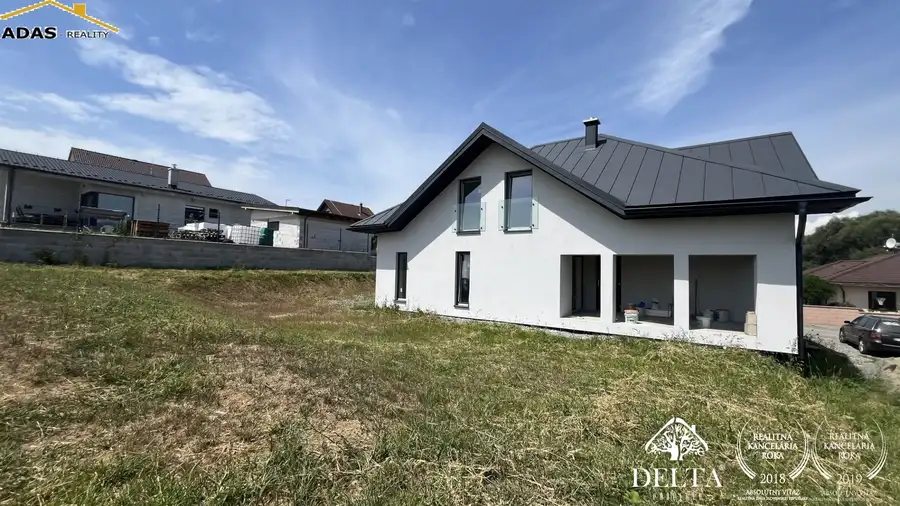
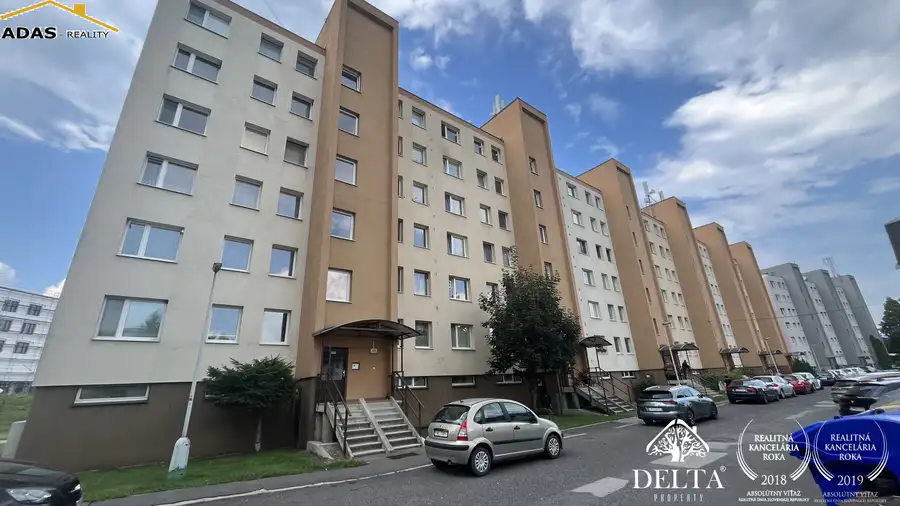
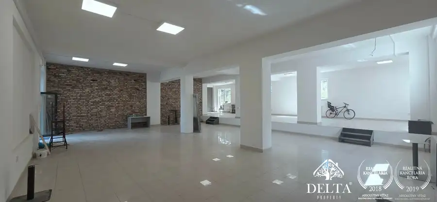

Bývajte pod Tatrami! Nové rodinné domy v Mlynčekoch – AKCIA -10%
Mlynčeky




- Plocha140 m²
- StavNovostavba
- VlastníctvoFiremné
- Energetická triedaB
O nehnuteľnosti
Bývajte pod Tatrami! Nové rodinné domy v Mlynčekoch – AKCIA -10%Hľadáte moderné bývanie v tesnej blízkosti Vysokých Tatier? Ponúkame na predaj novostavby rodinných domov v rámci novej radovej výstavby v malebnej obci Mlynčeky. Projekt spája pokoj vidieka s výbornou dostupnosťou do mesta Kežmarok (len 5 minút).ZÁKLADNÉ INFORMÁCIE•Obytná plocha: od 140 m² do 190 m² (veľkorysá plocha pre celú rodinu).•Pozemky: Parcely č. 29-31 a 34-36.•Stav projektu: Príprava infraštruktúry je hotová – všetky inžinierske siete sú skolaudované a na domy je vydané právoplatné stavebné povolenie. Môžete začať plánovať svoj nový domov ihneď!ŠPECIÁLNA PONUKA: Pre prvých dvoch záujemcov sme pripravili akciovú zľavu 10 % z ceny! Využite túto jedinečnú príležitosť a získajte prémiové bývanie za bezkonkurenčnú cenu.Radový dom 29 - 5.-izbový – 195m2- 380m2 – od 308.000,-€Radový dom 30 - 4.-izbový – 140m2- 245m2 – od 216.000,-€Radový dom 31 - 4.-izbový – 140m2- 420m2 – od 249.000,-€Radový dom 34 - 5.-izbový – 171,5m2- 410m2 – od 285.000,-€Radový dom 35 - 4.-izbový – 140m2- 225m2 – od 212.000,-€Radový dom 36 - 4.-izbový – 140m2- 265m2 – od 229.000,-€________________________________________TECHNICKÝ ŠTANDARD (HOLODOM)Domy sú projektované s dôrazom na energetickú efektivitu (certifikát B) a dlhú životnosť materiálov.1. Konštrukcia a hrubá stavba•Základy: Betónové pásy (C 12/15) s monolitickou základovou doskou (180 mm).•Murivo: Nosné tehlové murivo (300 mm) – výborná akumulácia a akustika.•Stropy a schodisko: Železobetónové monolitické konštrukcie pre maximálnu stabilitu.•Priečky: Kvalitná tehla (115 mm).2. Izolácie a povrchy•Zateplenie: Polystyrén (150 mm) pre nízke náklady na energie.•Fasáda: Moderná štruktúrovaná omietka.•Strecha: Rovná s tepelnou izoláciou, PVC fóliou a estetickým riečnym kameňom.•Interiér: Jemné sadrové omietky, biela maľba, v kúpeľniach vápenno-cementové omietky.•Podlahy: Hladký cementový poter pripravený na finálnu pokládku.3. Výplne otvorov a technológie•Okná: Plastové s izolačným trojsklom a akustickým útlmom.•Dvere: Bezpečné hliníkové vchodové dvere s trojbodovým zamykaním.•Kúrenie: Rozvody pre nízkoteplotné teplovodné vykurovanie.•Bonus: Komínový systém ako príprava na krb, ktorý dotvorí atmosféru domova.________________________________________LOKALITAObec Mlynčeky je známa čistým vzduchom a krásnou prírodou. Je ideálnym miestom pre rodiny s deťmi a milovníkov aktívneho oddychu v blízkosti Tatranského národného parku.Užite si komfort dvojpodlažného radového domu s vlastnou garážou, dvoma parkovacími miestami a pokojnou komunitou. Každý dom ponúka premyslené riešenie pre 4 až 6-člennú rodinu.Ak Vás ponuka zaujala, neváhajte ma kontaktovať. Bližšie info a obhliadky:Andrea ŠubováTel.: 0917 757 338E-mail: andrea.subova@adas.sk
Parametre
- Druh
- Rodinný dom
- Druh domu
- Klasický dom
- Dátum zverejnenia
- 25. 02. 2026
- Energetický certifikát budovy
- B
- Plocha pozemku
- 0 m²
- Počet izieb / miestností
- 4
- Počet nadzemných podlaží
- 2
- Počet vonkajších parkovacích miest
- 2
- Prístupová komunikácia
- Asfaltová
- Rok výstavby
- 2026
- Stav nehnuteľnosti
- Novostavba
- Terén pozemku
- Rovinatý
- Typ
- Predaj
- Typ konštrukcie
- Tehlová
- Vlastníctvo
- Firemné
- Vybavenie
- Garáž, Vonkajšie parkovacie miesto
- Vybavenie objektu
- Holopriestor
- Vykurovanie
- Podlahové, Tepelné čerpadlo
- Zariadenie
- Holopriestor
- Zastavaná plocha
- 140 m²
- Úžitková plocha
- 140 m²
Kde to je


Mohlo by Vás zaujímať

DomNové 260 000 €Ponúkame na predaj novostavbu rodinného dom ktorý sa nachádza v obci Župčany, vzdialenej, len 8km od Prešova Župčany 200 m²
BytNové 166 000 €Ponúkame na predaj 3-izbový byt s loggiou, nachádzajúci sa v mestskej časti Palúdzka Liptovský Mikuláš 3-izbový60.92 m²5. podlažie
Komerčné priestoryNové Cena na vyžádáníVeľkorysý komerčný priestor na prenájom – centrum Popradu Poprad 300 m²